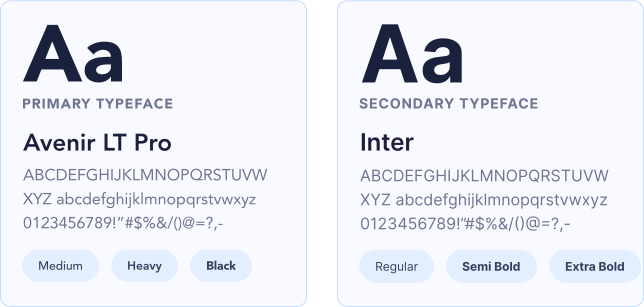
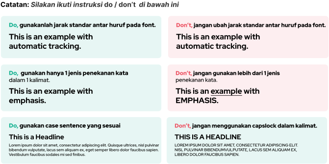
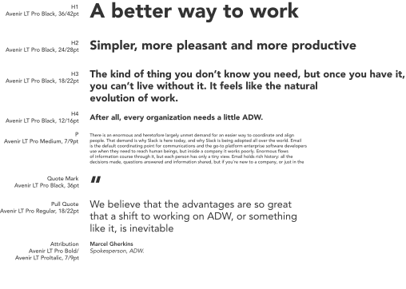

Brand Identity Guideline
Logos & Usage Color Background Supergraphic Typography Marketing Media Print Media MerchandiseTypography
Kami menggunakan istilah tipografi ini untuk menerapkan gaya tipografi yang konsisten di seluruh dokumen, situs web, dan aplikasi.Tipografi kami menggunakan Avenir LT Pro sebagai font primary dan Inter sebagai font secondary. Pada sistem lain seperti situs web dan aplikasi; Helvetica, Arial, dan Open Sans digunakan sebagai fallback.
Preview Typography
Instruksi Penggunaan
Ukuran Penggunaan
Previous
Supergraphic
Next
Marketing Media